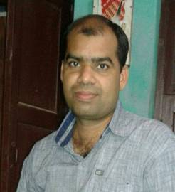
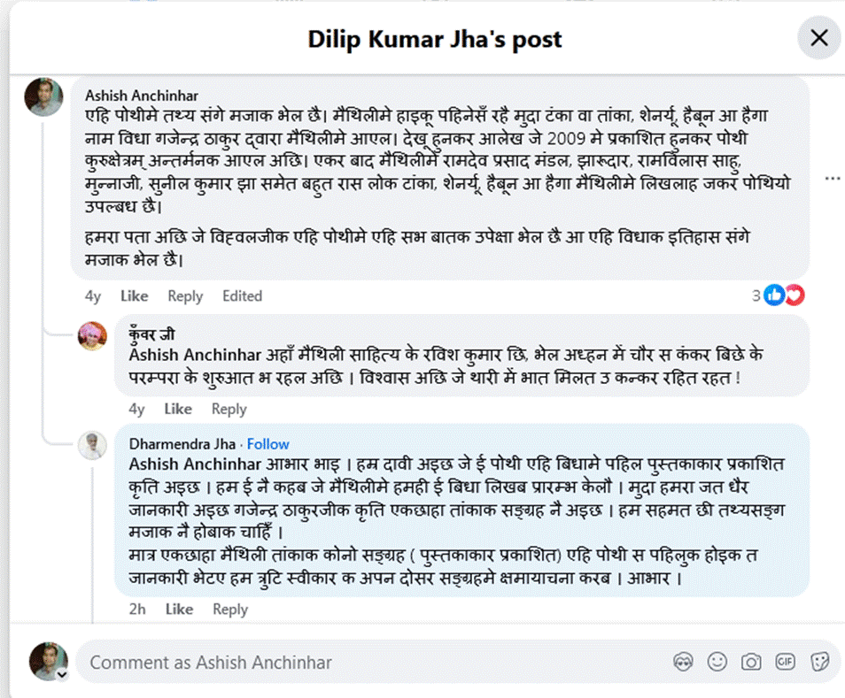
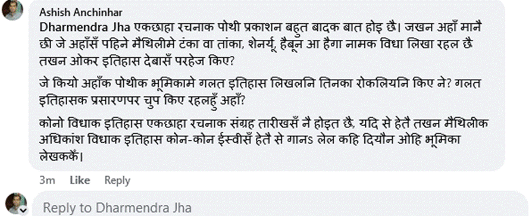
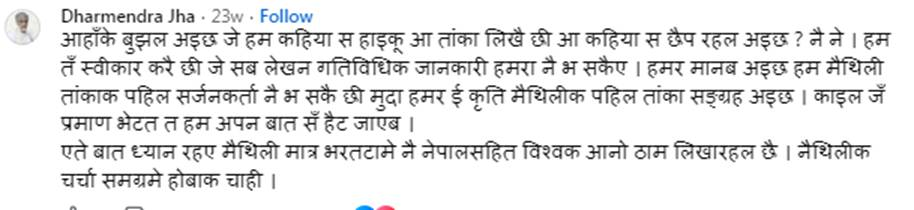

विदेह प्रथम मैथिली पाक्षिक ई पत्रिका

(मैथिली गजल विशेषज्ञ, मैथिली वेब पत्रकारिता विशेषज्ञ, ब्लॉगर, शोधकर्ता, आलोचक, संपादक)
पोथी संग्रहकर्ता इतिहासकार होथि से जरूरी नहि
1
इतिहास लिखबाक लेल पोथीक संग्रह, ओकर भंडार करब आवश्यक नहि छै। इतिहासकार लेल पहिल आ अंतिम वस्तु छै इतिहासबोध भेनाइ। इतिहासबोध रहलाक बाद पोथीक भंडार अपने आप भऽ जाइत छै, सोर्स आ तथ्य अपने आप आबि जाइत छै। ई अलग बात जे चेला-चपाटीसँ भरल समाजकेँ पोथिए संग्रहकर्ताकेँ इतिहासकारक रूपमे प्रचार कएल जाइत छै। मैथिलीक मुख्यधारामे एखन धरि इतिहासबोध बला इतिहास कम्मे लिखाएल छै, नाममात्र। एकमात्र जयकांत मिश्रकेँ इतिहासकार कहि सकैत छै। कारण हुनका लग इतिहासबोध छलनि। एकर अतिरिक्त मुख्यधाराक शेष इतिहास तात्कालिक लोभ-लाभ, असहमति-आलोचनासँ आहत भऽ इग्नोर करब, संबंधवाद आदिकेँ ध्यानमे राखि लिखल गेल अछि आ एखनो लिखाइत अछि।
2
रचना प्रकाशित करबाक बहुत रास साधन-सामग्री होइत छै जे समय-समयपर बदलैत रहैत छै। आ रचना माने कोनो विधाक। वर्तमान समयमे अधिकांश रचना पत्रिकामे छपैत छै आ तकर बाद पोथी रूपमे। किछु रचना सीधे पोथी रूपमे सेहो छपैत अछि। आब एहि ठाम रचनासँ हटि कने विधापर चली, कारण अंततः रचनाकेँ कोनो ने कोनो विधामे विभाजित कएले टा जाइत छै। आब एहिठाम प्रश्न उठैत अछि जे कोनो विधाक शुरूआत कहियासँ मानल जेबाक चाही। तँ सोझ ओ सरल उत्तर छै जे जहिया ओकर पहिल प्रकाशन भेलै से चाहे ओ पत्रिकामे प्रकाशित भेल हो वा कि पोथी रूपमे। जे सुयोग्य आ वास्तविक इतिहासकार छथि से पहिल प्रकाशनेसँ ओकरा मूल्यांकन करैत छथि आ बादमे जे एलै तकरा ओ विस्तारक रूपमे मानै छथि। मुदा जँ कोनो इतिहासकार आन-आन विधा लेल, आन-आन रचनाकार लेल एक नियम राखथि आ जिनकासँ वैचारिक असहमति छनि तिनका लेल दोसर नियम राखथि तखन दोषयुक्त इतिहास लिखैत छथि।
3
मैथिली साहित्यमे हाइकू बहुत पहिनेसँ लिखाइत छल मुदा अन्य जापानी विधा जेना टंका, शेनर्यू, हैबून, हैगा, वाका आदि लगभग 16-17 वर्ष पहिने गजेन्द्र ठाकुर द्वारा मैथिलीमे आनल गेल। आ से मात्र ओ अपने नहि, अपना संग बहुतोकेँ ई विधा सभ सिखेलाह आ एहि विधा सभमे बहुत रचनाकार ओ रचना सभ ख्याति पेलाह।
2009 मे प्रकाशित कुरुक्षेत्रम् अन्तर्मनक नामक पोथीमे 'मैथिली हाइकू हैकू क्षणिका' नामक आलेखमे हाइकूक अतिरिक्त अन्य जापानी विधा जेना टंका, शेनर्यू, हैबून, हैगा, वाका आदिपर नीक चर्चा केलथि। गजेन्द्र ठाकुरक ई पोथी सार्वजनिक रूपें इंटरनेटपर तऽ उपलब्ध छलैहे संगहि संग एकर प्रिंट रूप सेहो सामान्य पाठकससँ लऽ कऽ विभिन्न आलोचकगण गेलै। एकर बाद गजेन्द्र ठाकुर विदेहक फेसबुक ग्रुपपर टंका, शेनर्यू, हैबून, हैगा, वाका सिखाबऽ लगलखिन आ लगभग 2012 धरि बहुत रास रचनाकार एहि विधामे एलाह एवं ओ सभ अपन-अपनमे सेहो ओकरा प्रकाशित करबेलनि जाहिमे उमेश मंडल, शिव कुमार झा 'टिल्लू' मुन्नाजी, रामविलास साहू, चंदन कुमार झा, सुनील कुमार झा (आब सुनील कुमार भानू) आदिक नाम अछि। बादमे फसबुक ग्रुपक बहुत रास पोस्टकेँ मैथिली हाइकू नामक ब्लागपर सेहो राखि देल गेलै सुविधा लेल।
चंदन कुमार झाक हाइकू संग्रह ‘सम्भावना’ अछि जाहिमे चंदन झा गजेन्द्र ठाकुर द्वारा पल्लवित एहि सभ विधाक उल्लेख अछि, सौभाग्यसँ चंदन झाक एहि पोथीक भूमिका रमण जी लिखने छथि। मुदा..........
4
किछु वर्ष पूर्व प्रकाशित धर्मेन्द्र विह्वलक पोथी 'व्योमक ओहिपार’ केर भूमिका डा. रमानंद झा रमण एना लिखने छथि जेना कि धर्मेन्द्र विह्वल टंका, शेनर्यू, हैबून, हैगा, वाका एहि विधाकेँ मैथिलीमे अनने होथि। सभसँ बड़का मजाक तऽ ई भेल छै जे डा. रमानंद झा 'रमण' भूमिकामे टंका आदिक नियम सेहो बखानैत छथि सेहो बिना गजेन्द्र ठाकुरक रेफरेंस देने। हुनकर ई भूमिका हुनके फेसबुपर हम पढ़लहुँ जकरा अहाँ सभ एहि लिंकपर पढ़ि सकैत छी- विह्वलक जापानी पञ्चपदी : टांका।
धर्मेन्द्र विह्वल ओ धीरेन्द्र प्रेमर्षि दूनू भाए विदेहक फेसबुकसँ लऽ कऽ विदेहक साइट धरि जुड़ल छथि से के ने जनै छै। आ ई सभ लेल सार्वजनिक छै बिना रोक-टोककेँ।
धर्मेन्द्र विह्वलक पोथी प्रकाशित भेलाक बाद दिलीप कुमार झाक एक पोस्टपर हम अपन आपत्ति दर्ज केने रही जकर उत्तर दैत धर्मेन्द्र विह्वल साफ केलथि जे हुनकासँ पहिने मैथिलीमे टंका, शेनर्यू, हैबून, हैगा, वाका रहै मुदा एकछाहा टंकाक ई पहिल पोथी अछि। ताहिपर हम हुनका उत्तर देने रहियनि जे एकछाहा पोथीक प्रकाशन इतिहासमे बहुत बादक घटना भेलै, अहाँक पोथीमे तथ्यकेँ तोड़ल गेल अछि, ताहिपर धर्मेन्द्र विह्वल चुप रहि गेलाह। धर्मेन्द्र विह्वल अपन अंतिम कमेंट एना लिखलनि जाहिसँ भारत-नेपालक राजनीतिक द्वंद हो, एकर बाद हम कमेंट नहि केलियनि।
हमर टिप्पणी आ धर्मेन्द्र विह्वलक टिप्पणीक स्कीन शाट पाठक अही आलेखक अंतमे पढ़ि सकै छथि।
5
कथित रूपसँ एकछाहा टंकाक पोथी लीखऽ बला जखन मानि रहल छथि जे ई विधा सभ हुनकासँ पहिने छै तऽ ओकर नाम लेबासँ परहेज किए कऽ रहल छथि। टंका आदिक नियम मैथिलीमे गजेन्द्र ठाकुरक देन छनि तऽ ओकर रेफरेंस देबाक बेगरता किएक ने भेलनि।
अइ पोथीक भूमिका लेखकक रूपमे डा. रमानंद झा 'रमण' इतिहासबोध धरि बिसरि गेल छथि। हुनका गजेन्द्र ठाकुरपर तामस छनि तँइ गजेन्द्र ठाकुरक नाम मिटा देबाक सभसँ सरल उपाय इएह बुझेलनि जे गजेन्द्र ठाकुरक नाम नहि ली मुदा चोरा-नुका कऽ गजेन्द्रे ठाकुरक आलेखकेँ अपना नामसँ कऽ ली। से बेस केने छथि रमानंद झा 'रमण' जी।
यदि रमानंद झा 'रमण', धर्मेन्द्र विह्वल वा किनको ई बुझाइत छनि जे गजेन्द्र ठाकुरसँ पहिने मैथिलीमे टंका, शेनर्यू, हैबून, हैगा, वाका छलै, ओकर नियमपर चर्चा भेल छै तऽ सेहो सामने आनथु। इतिहासशुद्धि करथु। हमहूँ हुनकर मेहनति लेल सलाम करबनि।
6
जखन आधुनिक कालमे सभ तथ्य सार्वजनिक रहितो मुख्यधाराक आलोचक-इतिहासकार सभ बैमानी कऽ लैत छथि, केकरो हिस्सामक मेहनति अपना नामे वा अपन प्रियक नामे कऽ दैत छथि तखन ओहि कालखंड सभहक बात सोचियौ जहिया ई साधन सभ नै रहै, तहिया ई सभ कतेक बैमानी केने हेथिन? तहिया कतेक उत्फाल मचेने हेथिन ई सभ?
तँइ हम मैथिलीक मुख्यधारामे लिखल अधिकांश इतिहासपर विश्वास नै करैत छी।
हमरा मुख्यधाराक कोनो लेखक, कोनो इतिहासकारसँ प्रश्न नहि अछि। हमर प्रश्न मैथिलीक सामान्य पाठकसँ अछि जे दुर्भावनासँ भरल मैथिलीक मुख्यधाराकेँ स्वस्थ आ हितकारी बनेबाक लेल कोन-कोन आ की-की उपाय कएल जेबाक चाही?
परिशिष्ट-



अपन
मंतव्य
editorial.staff.videha@zohomail.in
पर पठाउ।
विदेहमे सभठाम ताकू / Search all Videha
Static full-text search · Pagefindलेखक/शीर्षक/अंक/वर्ष — खोज-विधा; शेष बटन विदेह-खण्ड फिल्टर। Author/Title/Issue/Year are search modes; the remaining buttons filter indexed Videha sections. Static Pagefind index — no search server. रोमन/IAST शब्दक ठीक परिणाम नहि भेटलापर ध्वन्यात्मक (phonetic) फॉलबैक स्वतः चलत। PDF-अभिलेख बटन archive.org/VidehaAndSadeha क जीवन्त सूची (सभ अंक + सदेह) मे ताकत — अंक-संख्या (जेना ४४५) लिखितहि सोझे PDF भेटत।